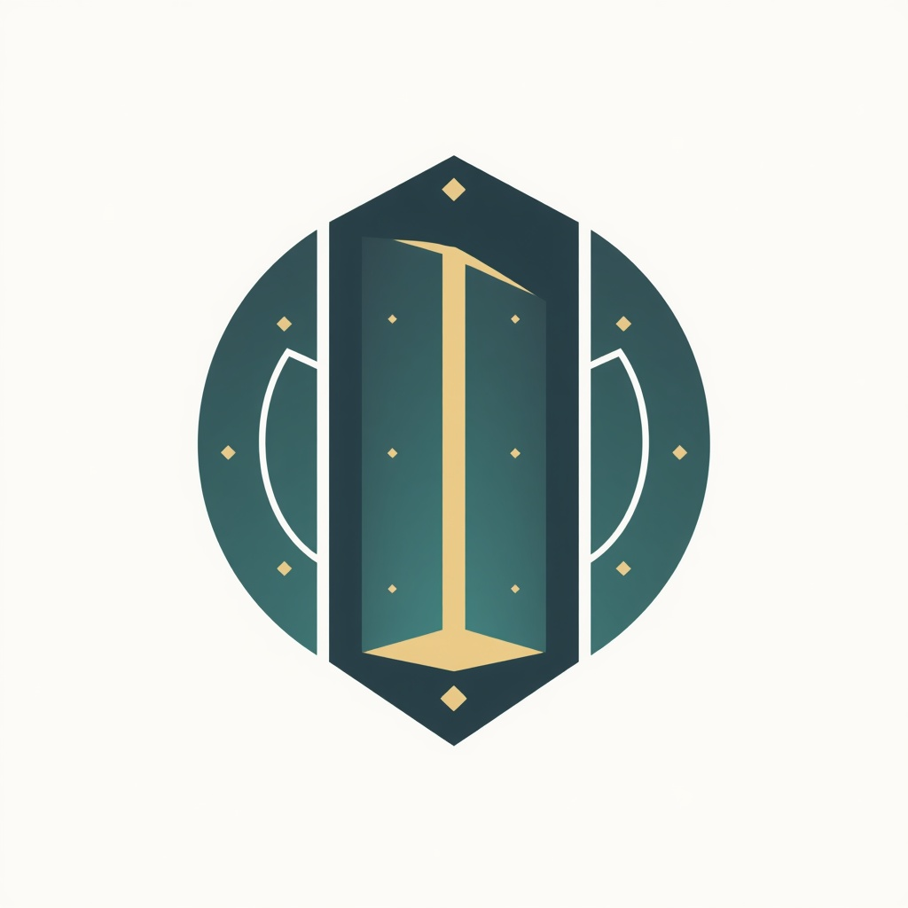

Ninth Door← Sand LabsAN ORIGINAL ADVENTURE / MECHANICS PREVIEW
Explore, talk, collect and connect. The final scenario will be developed with you.
Story in development. These rooms, objects and test dialogue demonstrate mechanics only; they are not the final scenario or characters.
Atrium
The test puzzle is complete. Next, we will build the story together.